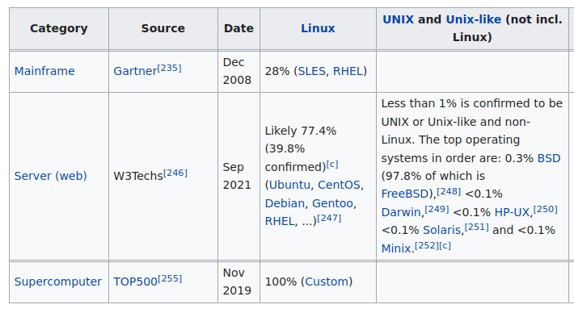

Tema 0: Presentación
Programación y Administración de Sistemas
(2023-2024)
1 Profesorado y Moodle
Moodle
Todo el material mínimo y opcional de la asignatura está disponible en la plataforma Moodle de la UCO:
Profesorado
Cordinación y teoría: Javier Sánchez Monedero
Prácticas:
- Prácticas 1-3: María Isabel Jiménez Velasco y Víctor Manuel Vargas Yun
- Práctica 4: Enrique García Salcines
Horarios de tutoría y datos de contacto en Moodle.
Móviles en clase: ¿qué dice ChatGPT? (1/2)
El uso de los móviles en la educación puede tener tanto efectos positivos como negativos.
- Facilita el acceso a la información y recursos educativos en línea.
- Mejora la colaboración y el trabajo en equipo a través de aplicaciones y herramientas en línea
- Fomenta la independencia y el aprendizaje autónomo.
- Aumenta la motivación y el interés por el aprendizaje.
Móviles en clase: ¿qué dice ChatGPT? (2/2)
- Distracción y pérdida de concentración en la clase.
- Uso inadecuado y poco ético, como la trampa en exámenes o el acceso a contenido no apropiado.
- Adicción a los dispositivos y dependencia en la tecnología.
- Desigualdades socioeconómicas, ya que no todos los estudiantes tienen acceso a dispositivos de alta calidad o a una conexión a Internet confiable.
2 Objetivos
Actividad en clase
En buscadores genéricos o de empleo busca “administrador/a de sistemas”, “devops”, “sysadmin”
Ejemplos:
Administrador/a de sistemas
Según Wikipedia:
Un Administrador/a de Sistemas es la persona que tiene la responsabilidad de implementar, configurar, mantener, monitorizar, documentar y asegurar el correcto funcionamiento de un sistema informático, o algún aspecto de éste.
Memes
Fuente: we are hiring.
Tareas
- Mantener el Sistema Informático de una empresa/institución.
- A nivel software:
- Instalar servicios utilizados por la empresa.
- Interconectar servicios (mismo login y contraseña para todo).
- Mantener servicios (p.ej. Moodle, servidor de correo…).
- Realizar copias de respaldo de los datos.
- Controlar la seguridad.
- ¿A nivel hardware?
Software libre
Aunque en el escritorio el software privativo sea líder el software libre y los sistemas Linux, FreeBSD, etc. son la opción mayoritaria servidores y supercomputadores.

¿Por qué software libre?
- Entorno empresarial y de investigación cooperativo.
- Adopción de estándares.
- Flexibilidad, fiabilidad, seguridad, transparencia.
- Independencia de proveedores.
- Ética y compromiso social.
- Más económico (¿?)

3 Objetivos de la asignatura
Objetivo
El objetivo fundamental es que el alumnado que curse la asignatura adquiera los conocimientos básicos y domine las técnicas fundamentales de la Administración de Sistemas Operativos.
Objetivos concretos
- Conocer los comandos básicos y las secuencias de pasos necesarias para instalar y administrar sistemas.
- Conocer y manejar los ficheros de configuración de los sistemas.
- Adquirir conocimientos básicos sobre lenguajes de scripting y de programación de la Shell.
- Comprender cómo se organiza el sistema operativo y los subsistemas POSIX para poder escribir aplicaciones que interaccionen con los mismos.
- Instalar y mantener servicios en Sistemas Distribuidos.
- Adquirir conceptos teóricos y prácticos de rendimiento y seguridad en sistemas.
4 Temario y programación
Temario
- Introducción a la administración de sistemas.
- Organización de un sistema operativo GNU/Linux.
- Gestión de usuarios.
- Arranque y parada del sistema y servicios.
- Monitorización y gestión de recursos.
- Organización de sistemas de ficheros y discos.
- Administración de sistemas de ficheros y discos.
- Restauración y copias de seguridad
- Gestión de las comunicaciones.
- Virtualización.
Temario prácticas
Bloque I:
- Programación de la shell.
- Expresiones regulares para la programación de la shell.
Bloque II:
- Programación en POSIX.
- Administración de servidores web: Apache.
Planificación asignatura
Calendario aproximado prácticas
Provisional: seminarios aulas y/o profesionales.
5 Bibliografía
Bibliografía
Básica para seguir la asignatura:
UNIX and Linux System Administration Handbook, 5th Edition. Evi Nemeth, Garth Snyder, Trent R. Hein, Ben Whaley and Dan Mackin. Addison-Wesley. 2018.
Essential System Administration (3a ed.). Aeleen Frisch. O’Reilly & Associates. 2002.
El Arte del Terminal, Joshua Levy, 2023.
Adicional:
- Administración de sistemas Linux. Adelstein, Tom. Lubanovic, Bill. Anaya multimedia, O Reilly. 2007.
- Unix shell programming, 3a Edición. Kochan, Wood. Sams Publishing. 2003.
- LPI Linux Certification in a Nutshell, Third Edition. Adam Haeder, Stephen Addison Schneiter, Bruno Gomes Pessanha, and James Stanger. 2010.
- K. A. Robbind, S. Robbins. Unix Systems Programming. Prentice Hall, 2003
6 Evaluación
Evaluación
- Leer detenidamente la guı́a docente.
- La evaluación de la asignatura se divide en dos partes, parte teórica y parte práctica (Teorı́a 50 % + Práctica 50 %).
- Para aprobar la asignatura es necesario obtener al menos 5 sobre 10 puntos en la parte de prácticas y 5 sobre 10 puntos en la parte de teorı́a. En caso contrario, la asignatura se considera suspensa.
- Si se aprueba solo la teorı́a o solo la práctica, la nota correspondiente se guarda hasta la convocatoria de septiembre.
Evaluación: exámenes y pruebas
La parte de teorı́a (50 % de la nota) se evaluará con un examen final teórico que estará compuesto de:
Pruebas objetivas tipo test (20 %, mı́nimo 5 sobre 10).
Pruebas de respuesta corta con supuestos prácticos que versen sobre los contenido teóricos dados en clase (30 %, mı́nimo 5 sobre 10).
La parte de prácticas (50 % de la nota) se organiza en dos bloques. Consta de:
- Examen práctico de programación y administración de sistemas 50 %, mı́nimo 5 sobre 10). Existen dos posibilidades:
- Exámenes prácticos parciales realizados durante el curso (eliminan materia de cara al examen final).
- Examen práctico final realizado durante el periodo de exámenes.
Evaluación: exámenes y pruebas
- Para aprobar las prácticas es necesario aprobar cada Bloque por separado con 5 sobre 10 puntos.
- Para presentarse a las prácticas en la convocatoria de junio es necesario haber asistido a un 80 % de las sesiones de prácticas.
- Para la convocatoria de julio y de septiembre, la asistencia a las prácticas no es requisito.
- Las calificaciones parciales no se guardan de un curso a otro.
- Se guardan calificaciones parciales (bloques de prácticas o teorı́a) dentro de las convocatorias del mismo curso académico.
- Los alumnos a tiempo parcial deben ponerse en contacto con el profesor.
Tareas de administración (I)
- Resolución de ejercicios teóricos y/o prácticos propuestos y anunciados.
- Las alumnas/os podrán proponer tareas similares a las propuestas.
- Esta nota se guardará para todas las convocatorias del curso académico. Las tareas pueden llegar a valorarse hasta 2 puntos en el examen de teorı́a (sobre 5 puntos). Se tendrá en cuenta para aumentar nota una vez aprobado el examen.
Tareas de administración (II)
- Se deberá redactar un guión donde se detalle paso a paso los comandos y operaciones necesarios para llevar a cabo la tarea, acompañados de capturas cuando ası́ se requiera. El documento deberá ser autocontenido y explicativo y todo se deberá realizar sobre una imagen virtual de un sistema operativo GNU/Linux. Se presentará en clase durante un tiempo aproximado de 10-15 minutos.
7 DevOps
DevOps

8 Sugerencias
Dinamización de clases
- Ideal: aula de prácticas para ir probando lo que hacemos…
- Quizz: 1 por tema (cada 2 clases)
- Tareas administración
- Resolución de casos prácticos
- Memes
- …